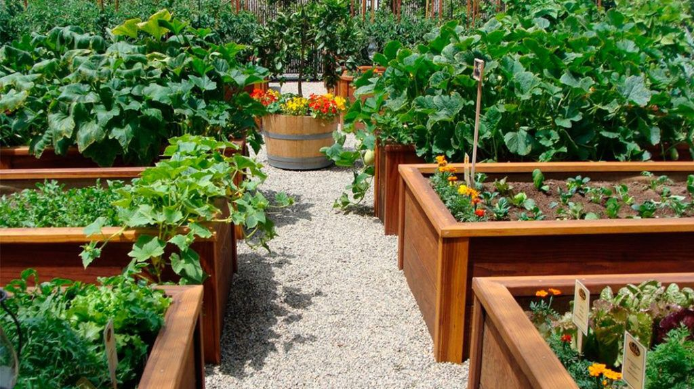
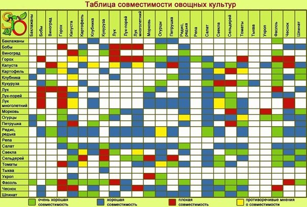
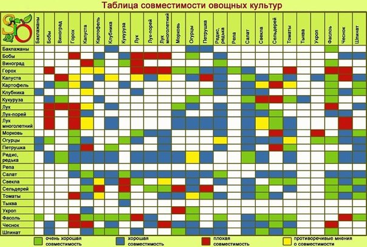

Каталог
ЧТО С ЧЕМ САЖАТЬ НА ГРЯДКАХ?


При посадке грядок следует учесть:
1. Не уживаются вместе растения одинаковой высоты и «лопушистости», если посажены они очень тесно.
2. Не любят соседства представители одного семейства. Особенно ссорятся друг с другом зонтичные.
3. Угнетают всех без исключения фенхель и полынь.
4. Лук и чеснок агрессивны по отношению к бобовым и капустным.
5. Морковь, свекла, огурцы, томаты приветствуют любое соседство.
6. Салат и шпинат выделяют вещества, активизирующие рост корней других растений, и притеняют почву.
7. Защищают от вредителей петрушка, фасоль и губоцветные травы: мелисса, базилик (реган), чабер, календула, тимьян, котовник, иссоп, настурция, бархатцы. Лук и чеснок гасят грибковые болезни.
8. Кукуруза и подсолнух берегут соседей под своей тенью, защищают от ветра и создают хороший микроклимат.
Подбираем пару:
1. Морковь - лук: защищают друг друга от морковной и луковой мухи.
2. Капуста - сельдерей: вместе надежнее противостоят вредителям и болезням. Сельдерей отпугивает белянок, его сажают между головками капусты. После того как капусту уберут, он разрастается. Подходят ранняя капуста, брокколи, ранняя цветная.
3. Огурцы и укроп отлично уживаются рядом.
4. Помогают друг другу базилик и помидоры.
5. Хорошо соседствуют в одном ряду кольраби и салат, последний убирают раньше, чем кольраби.
6. Прекрасно себя чувствуют и плодоносят до холодов огурцы, плетущиеся по кукурузе или подсолнухам, а также растущие рядом с плетистой фасолью.
7. Фасоль неплохо уживается рядом с огурцами и помидорами.
8. Редис хорошо посеять там, где позже будут цуккини, кабачки и другие поздние овощи.
